How PFOR works
- Codec
pfor, CTid0x72D70D, blocks of 256 values. Zukowski, Héman, Nes and Boncz, Super-Scalar RAM-CPU Cache Compression, ICDE 2006.
A spatial predictor guesses each sample from its neighbours and keeps only the difference, or the residual. On a smooth tile most residuals are small, such as 3 for an elevation of 1532 m predicted as 1529 m. They are small but rarely repeat, so dictionary compressors such as zstd gain little.
PFOR (patched frame of reference) writes each residual with fewer bits. It packs a block at one small width and keeps the few values that do not fit in a patch list. Every value then sits at a known bit position, so a decoder can unpack any of them without reading the ones before it. The eight-value example below follows one block from the input to the bytes on the wire.
Plain bit packing
A byte has 8 bits, yet the value 5 needs only three, 101. Bit packing gives every value in a block the same width w and writes them back to back, so value i always starts at bit i × w. Eight values at 3 bits take 24 bits, or 3 bytes, instead of 8. The catch is that w must fit the largest value.
The example has eight predictor residuals, including one outlier. Written in binary, most of them need two or three bits. The last one needs seven.
Plain bit packing must use seven bits for every value, because w has to fit the 90. It is easy to decode but wastes four bits on each of the seven small values. Real residuals look like this all the time, at a cloud edge, a road crossing a field or a single noisy pixel.
One width, and a patch for the rest
PFOR chooses one width b per block, here b = 3, and uses it for every value. The values that do not fit are called exceptions. Here, 90 is the only exception.
An exception stays in the body, with its low bits in place. Its high bits and its position go in a side list. For 90, or 1011010 in binary, the body keeps 010 and the side list keeps 1011.
The animation stacks each value's bits, lowest first, and moves a line at b. At b = 7 nothing sticks out, but every value pays seven bits. At b = 2 the body is thin, but five values stick out. At b = 3 only the 90 does. Its four high bits leave for the exception list together with its position, and its low bits 010 stay where they were.

Zero padding gives the body eight uniform three-bit slots. Decoding first reads the body as if there were no exceptions at all, which gives 3 5 2 7 4 6 1 2. Then it patches each exception with one shift and one OR, value = body | (high << b). For the outlier the high bits 1011 are 11, so that is 2 | (11 << 3), which is 2 + 88 = 90.
Every body slot holds a real value, so no sentinel bit pattern is needed. The patch step also never moves a body value, so reading slot i still means reading bits i × b to i × b + b − 1.
What a block looks like
pfor cuts the values into blocks of 256. Inside an OpenZL frame the codec carries a nine-byte header, the element count and the element width, and its stream is the blocks back to back. The last block is padded with zeros, and the decoder drops them again.

A block opens with b and its exception count. Without exceptions the body follows at once. Otherwise a format byte gives eb, the high bits every exception carries, and how positions are stored. A short list costs one byte per position, and from 32 exceptions on a 32-byte bitmap is no larger, so the encoder switches to it there.
The body is always 32 × b bytes, laid out in 16-byte lane groups that Fast on one CPU core explains. Block size and layout are part of the wire format, so changing either would need a new CTid. Every field is described in core/src/pfor/spec.md.
How the encoder chooses b
Choosing b trades body against exceptions. Each bit taken off b saves 32 bytes of body, but more values become exceptions, and each one costs a position and its high bits. The encoder tries every b and keeps the one with the smallest estimated block, where each exception also counts a small penalty described below.

A histogram of bit widths gives the exception count at every b without packing anything. Positions go in a list below 32 exceptions and in a bitmap from 32 on, a width needing more than 255 exceptions is skipped, and each exception adds a 4-bit penalty so a near tie goes to fewer exceptions.
The search is not part of the format. A decoder reads whatever b a block declares, so another encoder could choose differently and every reader would still decode its frames.
Thanks
PFOR is not our idea. Marcin Zukowski, Sándor Héman, Niels Nes and Peter Boncz described patched frame of reference in Super-Scalar RAM-CPU Cache Compression, at ICDE 2006, and almost everything on this page follows from that paper.
Our block layout follows TurboPFor by powturbo and its contributors, years of careful work that made fast integer coding easy to learn from. GeoZL is an independent implementation, and its frames are not bitstream compatible with TurboPFor, so any mistake in the adaptation is ours.